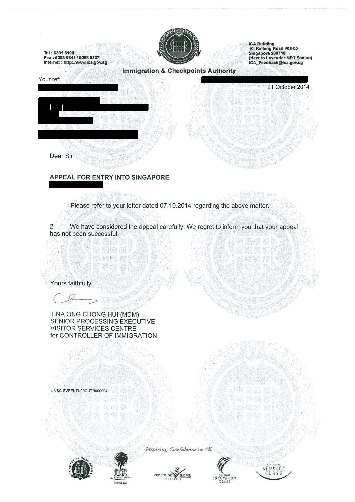
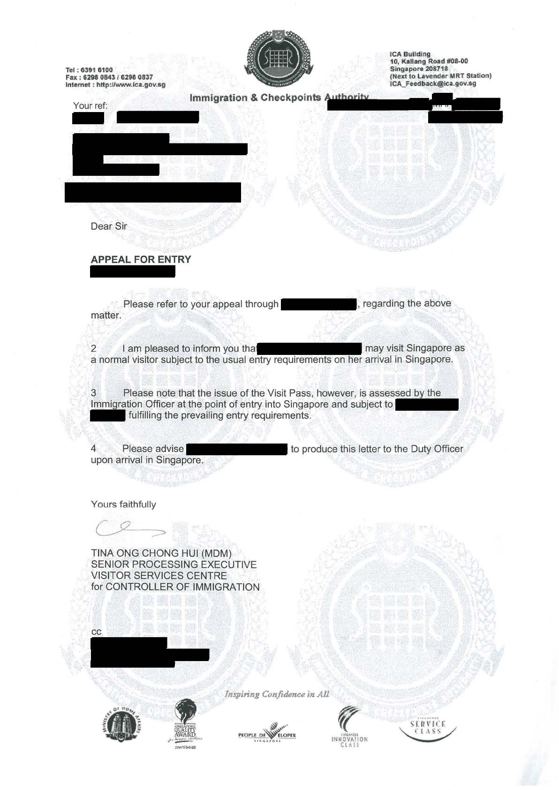

Appeal to enter Singapore
I have decided to write this guide for people who may have been wrongfully turned away at Singapore's immigration authority. Typically, this means that the person is prohibited from entering Singapore again, for an indeterminate duration. It can certainly be stressful for those who legitimately wish to visit the beautiful city state, but fear being turned away at the immigration checkpoint again and again.
Searching on the Internet yields conflicting accounts and methods to lift the ban on entering Singapore. As someone who has successfully appealed for my wife to enter Singapore, I wish to impart my knowledge to others who may share the same plight.
Disclaimer
- This is just a guide and does not guarantee entry into Singapore. However, if successful, it is
highly unlikely that the applicant will be turned away at the checkpoint.
- This guide is meant to be used by genuine travellers who wish to visit Singapore, or those who have been offered a job in Singapore.
- The author does not condone any person who wishes to enter Singapore for illegitimate reasons.
Pre-requisites
- The applicant has been refused entry and turned away at the Singapore immigrations checkpoint, for reasons which may or may not have been revealed by the immigration controller.
- Subsequently, if the applicant requires a visa to enter Singapore, it is likely that the application for it is being rejected.
-
The applicant will need to have a Singaporean company or contact who is willing to render assistance, hereinafter referred to as the sponsor.
Things to prepare
The sponsor will need to write a letter of appeal for the applicant and mail it together with supporting documents to the Immigration and Checkpoints Authority of Singapore addressed in the next section.
-
The Letter of Appeal
- This letter should be addressed to here with the subject heading of "Appeal to enter Singapore".
- It should be written and signed by the sponsor (or company's representative if the sponsor is a company).
- The letter should clearly detail the reason for which the applicant has been denied or refused entry into Singapore.
- If the reason is unknown, give a recount of what happened, maintaining a neutral tone in the letter.
- Reiterate the purpose for the applicant's desire to enter Singapore
- If the sponsor is the applicant's future-spouse, he may wish to highlight the desire to get married,
if applicable.
(
Disclaimer: a marriage of convenience is a serious offence and should not be taken lightly)
- If the sponsor is the applicant's spouse, and they have children, feel free to play the sympathy card.
- If the sponsor is a company who has offered the applicant a position, do indicate it in the letter. They should also highlight his/her qualifications and potential contribution.
-
Form 14
- The sponsor can download and print a copy of the form
here.
Under
PART III - ANTECEDENT OF APPLICANT, please indicate (a) and (c) as "Yes".
Attached a separate sheet of paper and provide the details accordingly (for the entire part if (b) or (d) also applies).
It is important to fill up the form truthfully and completely.
-
Form V39I
- The sponsor can download and print a copy of the form
here .
-
Photocopy of Sponsor's National Registration Identity Card (NRIC) Front & Back
- If the sponsor is a company, please provide a representative's NRIC.
-
Photocopy of Applicant's Passport
- Please provide photocopy of the applicant's biodata page and all stamped pages.
Where do I mail it to?
The above documents should be mailed to the following address:
DIRECTOR
VISITOR SERVICES
CENTRE
ICA BUILDING
10 KALLANG ROAD #08-00
SINGAPORE 208718
ATTENTION: APPEAL UNIT
How long does it take?
It typically takes 6 to 8 weeks for them to process the appeal, and a written reply will be mailed to the sponsor's address.
Dealing with rejection
I cannot recall how many rejection letters I received before my eventual success. All I can recommend is to keep trying. There is no way to know what factors the Immigration and Checkpoints Authority considers in these appeals.

If the appeal is successful, the reply will be similar to this:

Closing statement
Don't be discouraged if the appeal is not successful. My personal theory is that there is an inherent duration to the ban, and eventually the appeal will go through. I think it is not worth taking a gamble at trying to enter Singapore not knowing whether the ban is still in place. What's more, we cannot know for sure if repeated refusals to enter the country will extend the duration of the ban. A successful appeal serves as a validation that the ban has been lifted or passed, and you can travel to Singapore with peace in mind.
Contact me
If you need advise or a second pair of eyes for your appeal letter, please feel free to contact me at the following email: appeal2entersg@gmail.com
I will not entertain any requests to look for sponsors in Singapore.